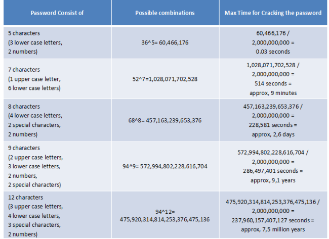

Introduction
The security issues of connected devices
What is a connected device?
Connected devices' vulnerability to hack
Methods to defend connected devices
What can the constructor do to improve connected devices security?
What can the consumer do to reduce the risks of connected devices?
Conclusion
References
In today's world which is becoming more and more digitalized, many devices are becoming "connected", that means able to communicate with other devices using wireless connections. The digital world was once thought to be separate from real life. However, the expansion of these devices makes our everyday life connected to internet. Indeed, due to their convenience, connected devices are steadily replacing ordinary devices. Making our watches, cars, houses, etc. connected. These devices connected one to each other makes what is called the "Internet of Things (IoT)" and is in constant expansion.
This internet of things'growth makes the threat of hacking (fact of breaking into a system) more oppressive as it can concern object surrounding ourselves every day. Moreover, we already count many cases of connected devices being compromised by hackers seeing their use diverted. For example, in 2015 a research of the University of Alabama showed how a hacker could kill a person. A team of undergraduate computing students got into iStan's software, the most improved artificial human, and controlled his pacemaker to change the heart rate allowing them to hurt and even kill iStan.
In this way there is a conflict between cybersecurity, which is the protection of computer systems from the theft and damage to their software, and this expansion of connected devices, changing these devices in potential threats to our life.
This conflict leads us to ask which challenges Cyber Security is facing with the expansion of the connected devices.
First, we are going to highlight the security issues of this kind of devices and in particular how are they being hacked. Then we will present methods to improve connected devices'cyber security, from the perspective of the producer, and from the one of the consumer itself.
First of all, in order to understand the vulnerabilities of the connected devices, we need to define what a connected object is and explain the way they work.
A connected device is defined as an object which could be connected to a network without wire. The object uses this network to communicate with other devices, and to be controlled remotely by another one, such as a computer, a tablet, or a smartphone. When multiple connected devices communicate with each other by Internet, the network they form is called the "Internet of Things (IoT)". There are more and more kinds of devices that become connected, like fridges, house doors, cars, etc. expanding steadily the scale of the IoT.
Generally, connected devices are used to monitor an environment, for example home appliances controlled by a phone or a tablet. They are able to communicate with other devices in order to act according to different events, exchange data and follow a set of instructions given by the user. These functionalities imply the development of their capacity of information processing.
Nowadays there exists a bunch of devices conceived to fulfill these characteristics. There are devices in multiple branches, like the manufacturing process, the e-commerce, the smart house, among others. On the manufacturing process and on the e-commerce, there are devices taking the order from a client and communicate it to another device which is responsible to start building the product or rapping it up for sends it to the client.
Nevertheless, the most common and expanding case, is the daily basis devices because it assembles multiple objects a person use every day like a smartphone, a fridge, a car, a watch, a tv, etc. and allows her to control and interact with all of them at the same time.
A connected device is composed by software, sensors, actuators and network connectivity. First the sensors are used in most of the devices to collect information such as temperature, humidity, movements, etc. while the actuators ensure the control of the device. Then the network connectivity allows the devices to be connected to the Internet.
The device is generally controlled by an application which can be installed on a smartphone, a tablet, or a computer. Finally, once it's connected to internet the device can exchange data with another object using a cloud, particularly to the device that controls it. This device-cloud-application connection forms a platform that allows the device to operate.
After seeing how does the Internet of Things works, we are going to study and analyze the different vulnerabilities of the daily basis connected devices that exists and what treats it implies, compromising the machines.
The first step is to understand the current security level of these devices and its weaknesses. As it was explained before, machines are designed in a way that allows people to connect them with other machines. For example, a person can control her own "smart home" using her smartphone or can also receive a text from her freezer informing her groceries to get. But, to obtain these degree of connectivity, most of these machines were designed to be very accessible, and subsequently very easy to break in.
Thus, the present security level possesses different kind of limitations:
Given the current state of the security levels, it's possible to identify multiple hacking methods taking advantage of these limitations, putting at risk not only the devices but also the data held by them. Before seeing these methods, it's necessary to define what is "hacking" a device, software or a network and who are the people behind those hackings.
Hacking means to intentionally access illegally into systems by exploiting all kind of breaches. According to the Federal Fraud and Abuse Act, the act of hacking is sanctionable by the law. By definition, a hacker is a computer specialist having an exceptional knowledge about new technologies' security and how to bypass it.
Now, after understanding more about hacking, it is essential to show some of the most used hack techniques which benefits from the vulnerabilities of connected devices.
The most common technique is the Brute Force Attack, which is one of the oldest in the book. During the attack, the hacker tests a large amount of passwords to unlock a specific account. There is also the Reverse Brute Force Attack, where the hackers test one same widespread password against multiple accounts.
In the Brute Force Attack, hackers use some tools like Aircrack-ng, John the Ripper, and Rainbow Crack to find password even the encrypted ones. Aircrack-ng allows the hackers to crack security protocols like WEP/WPA/WPA-2PSK to access the encrypted information and steal multiple accounts with their respective passwords. While John the Ripper helps the hackers to perform dictionary attacks, meaning they test multiple password combinations for different accounts at the same time. Finally Rainbow Crack generates rainbow tables, pre-computed tables with programmed passwords, saving a great amount of time during the hacking.
This kind of attack takes advantage of passwords' low level of security. Given the fact that they are by default predetermined by the company and they're usually not encrypted, they're an easy target for the hackers.
In fact, the most famous hacking concerning the IoT started with a Brute Force Attack. This was the 2016 Dyn cyberattack. During this attack a hacker or group of hackers used a Brute Force attack and were able to enter into almost every connected device. Indeed, using a list of usual default password they managed to enter into every device that still had default logs. Once in the devices, the hackers installed a malware called "Mirai". This malware transformed the devices into bots, allowing the hackers to create a Botnet strong enough to crash most of the biggest companies' websites.
Another very common technique is the Phishing, which use social engineering and other kind of techniques to make the user falls into a trap. Hackers follow always the same steps. They start by choosing their target; they choose an enterprise and get their customers' emails. Following by the attack, the hackers send a message to those customers trying to make them click on the link sent. Finally they collect the data of the target of the mail.
There is different kind of phishing, Spear Phishing, Clone Phishing, Website Forgery, Phone Phishing. The phishing depends about the hacker motivation, for example when we talk about Spear Phishing there the hacker is looking for information worth selling.
This technique takes advantage of people's mistakes. Indeed, they usually open emails, and SMS thinking they come from a reliable source, so they don't pay enough attention to see that the link is a fraudulent address.
There are multiple examples of people falling into phishing scams, but one of the most knowns is the phishing scam of plane manufacturer FACC. Its CEO Walter Stephan received a bogus email from someone claiming to be the president of the company, when he opened the email he let the hackers steal more than 50 million pounds.
A very used technique is called the Backdoor, which consists in two steps. The first one is to enter into the system and create a port (in this case a backdoor). And the second one is to use, several months later, this port to steal data or corrupt the files thanks to a virus. The backdoor is diffused by the same ways as the viruses to infest a maximum of machines and networks.
The Backdoor can be installed on your network and your device when you're visiting some trapped websites or when a hacker can penetrate your network giving him the possibility to install the Backdoor.
This method profit a lot of security flaws, first as we've seen with the brute force attack, it's easy to break in the majority of the connected devices. Then, it exploits the problem that companies didn't leave enough processing power for the security software making easier the creation of the backdoor. At last, the backdoor exploit the fact that connected devices haven't software or patches updated enough to defend the device from any intrusion.
For instance, if a hacker is able to hack and install a backdoor into one of the connected devices it will be only matter of seconds for all of the devices connected to the network to have a backdoor.
Finally we have we are going to see today's most popular technique, the Distributed Denial of Service Attack (DDoS) which is an attempt to make an online service unavailable to users. This attack is systematically launched from multiple infected or compromised devices. It uses all the hacked devices and direction them to the same DNS server hoping to crash it down.
The DDoS Attack takes advantage of the easiness to break in the connected devices to compromise them as we've seen with the "Mirai" case. Moreover, since they have a lack of processing power, connected devices are weak against DDoS and can easily be crashed.
In conclusion, IoT devices have some security failures which are exploited by the hackers through some techniques, already explained. These techniques allow the hackers to gain access and control the devices. After gaining control, what they do depends of their motivations. Today, it exist different types of hackers having different motivations justifying their actions classing them in multiples categories. The two most important categories are the Black Hats hackers and the White Hats hackers. A Black Hat Hacker purpose is to commit crimes like stealing sensible data, extort users and corrupt multiple databases. A White Hat hacker aims at informing people about vulnerabilities of their systems.
Now that we know connected devices' main vulnerabilities, it is vital to study the different methods there are to prevent hackers from wrongdoing.
As mentioned before, much vulnerability of connected devices comes from the device's conception itself. Thus connected devices manufacturers are facing security challenges, which they need to improve. Besides, there are different methods, either technique and organizational, already existing and used by few constructors that can improve the security of connected devices.
In one hand, from a technical point of view, connected devices producing company needs to improve security of the whole platform around the devices. It allows the devices to maintain their availability and security at the object, cloud and software levels.
As seen before, most of the hackers profit the connectivity of the device to the cloud or to others devices, so they can penetrate the system and upload viruses, take sensible data, or even control the devices. In order to be secured, the platform needs to provide AAA security (Authentication, Authorization and Accounting). That means authenticate the user's identity usually using a username and password. Then authorize access to the network resources only to authenticated users. Finally, the activities of these users will be audited meaning they're going to be checked by a program knowing the security rights.
Moreover, the platform needs to encrypt the user identity information. Indeed, encryption helps to protect the transmitted data, whether it is through the Internet, mobile network, wireless microphones, wireless intercoms, or through Bluetooth devices. Each packet of data in the transmission needs to be encrypted, using for example AES 128-bit encryption which is already used by some companies. Protecting the data in the case they leak. In particular, passwords should be well encrypted. Indeed, one of the hacking methods viewed was the Brutal Force Attack, where the hacker tests multiple passwords until he can access the account targeted. The efficiency of this method depends on the security level of the password. If the password is encrypted, it will be more difficult for the hacker to gain access to the account.
If the device is lost, the owner should be able to manage it remotely. This includes erasing the contents of the device and disabling its capability connecting to the internet. A device lost is most likely unguarded, leaving it very accessible to any kind of attack. Indeed the possibility to control it remotely and to power it down will provide another security method for the user.
In response to the default login credential vulnerability, the producer could force the user to change his logins. But they could also create a development environment to test and scan the initial configuration of the device to discover the vulnerabilities before the device is moved to production to protect better unchanged passwords. This should drastically reduce the number of Brute Force Attacks.
Finally, devices' manufacturers must set the last line of defense which is an automatic update mechanism. So that after the discovery of vulnerabilities, the company can release updates that will automatically be installed in time to patch them, and avoid a further expansion of the impact. This method will counter the initial failures presented before, which showed how most of these latest trend devices possess outdated software very easy to compromise.
On the other hand, from an organizational point of view, companies should integrate security experts to the team of product designers or consult a professional connected devices safety company. Indeed, when a company plans to develop a new connected product, it should not only consider the commercial point of view of the object. But also pay attention to the privacy and safety of the product user. This way, they could eliminate some possible security vulnerabilities at the product design phase.
Companies should also popularize cyber security knowledge to consumers and employees. Enterprises should not only help consumers to solve cyber security problems, but also warn consumers about potential issues and how to increase their safety. They must learn to consumers how to keep their devices in the best condition. For example, they can set smart reminders in their products, to remind consumer to regularly update security patches and to change their password frequently.
Employees should also be more informed about cybersecurity and trained to handle client's security issues. If the problems can be solved in time, this will minimize the amount of data stolen and the risk of large security breaches.
To conclude, most of the issues' solutions already exist. Nevertheless, because of the cost of their implementation companies didn't put priority on security when they designed these connected devices. A very scary example was in 2015 when two white hat hackers decided to show to Chrysler that their jeeps weren't secure enough and they could control the car by disabling the brakes. As result of this hacking the company decided to recall 1.4 million vehicles because they could be hacked remotely. Even if they lost a considerable amount of money, they took the right decision preventing possible accidents.More companies should follow this work ethic, to protect the user integrity.
Even if companies are responsible for th
ese cyber security issues, consumers have to react too. They shouldn't just wait for the protection from others. In order to be more protected, there are some simple advices consumers can follow:
Many consumers only use the default password without changing it which is not a good habit for cybersecurity. As said multiple times already, these passwords are the most easy to crack because they're not encrypted. To be continuously protected, users need to change regularly the password of the device. And of course this password needs to be complicated. This advice is quite widespread and obvious for computers, but people tend to forget it when it concerns objects. The following table illustrates how the complexity of the password improves security.
Since there isn't an automatic patching system, most of consumers don't thing about installing updates. So, they get attacked because the security system of the firmware contains many known vulnerabilities. So to reduce attacks' possibilities, it's better to look for firmware update regularly.
If a device is no longer used, its owner better format it because all information is still stored in it, including Wi-Fi's username and password. If you don't do it, your old device can easily become a target of hacking and the information stored can be stolen. The user will lose his personal information.
This last few years, the connected devices' market has exploded, leading our everyday life to be constantly connected to internet. Indeed, all these objects are communicating creating a vast network called the "Internet of Things".
However, we figured that these connected objects contained many security breaches, due in particular to their great connectivity. Thereby a slightly trained hacker can collect data that is transmitted in the network, and can also easily connect himself to a device. Once he's connected the hacker can easily break-in the device by exploiting different vulnerabilities of it. Indeed, most of the connected devices' software and passwords has got a lack of security allowing the hacker to attack the device with simple methods.
Thus, the hack threat doesn't concern only computers anymore but is extended to all the object surrounding us every day. This creates a big cybersecurity challenge that companies must raise. Moreover, it already exists technical and organizational methods that could improve connected objects' security, such as data's encryption and warning campaigns. There are also some habits connected devices' users should have that would improve greatly their own safety, for example simply remember to change regularly their passwords.
Nevertheless, we cannot consider the problem as solved because even if the solutions exist they are difficult to set up. From a financial point of view, the costs of securing and updating the devices is really high. Then from a technological point of view, it exists a conflict between safety and connectivity. Indeed, more protection (encryption, authentication,...), implies more difficulties and used resources to communicate (decryption, necessity to audit the activities,...). So, in the future the challenge will be to find a balance between safety and connectivity of the connected devices.
Finally, even if today's protection methods seem to be enough to be protected, hackers are being more and more skilled, raising the question if these solutions will still be enough in the future.
Internet of things:
https://www.slideshare.net/wso2.org/io-t-referencearchitecturewebinar
http://www.rfwireless-world.com/IoT/IoT-architecture.html
Phishing:
http://www.phishing.org/phishing-techniques
https://computer.howstuffworks.com/phishing.htm
Stealing password:
https://hypersecu.com/blog/91-5-ways-hackers-are-stealing-passwords
Backdoor:
https://en.wikipedia.org/wiki/Backdoor_(computing)
DDoS Distributed Denial of Service Attack (flooding):
https://www.incapsula.com/ddos/ddos-attacks/
https://www.sentryo.net/iot-hacking-connected-printers/
http://www.leparisien.fr/societe/alerte-les-objets-connectes-attaquent-23-10-2016-6241338.php
(2016 famous hackings)
https://fossbytes.com/hacking-techniques/
(Hacking techniques)
https://en.wikipedia.org/wiki/Security_hacker
(Hackers motivations)
https://blog.avast.com/2015/05/28/the-internet-of-things-to-be-hacked/
(3 problems case the connected objects are hacked)
https://www.tomsguide.com/us/iot-attack-physical-impact,news-19182.html
rotection:
http://www.darkreading.com/endpoint/5-tips-for-preventing-iot-hacks-------/d/d-id/1327270
http://www.informationsecuritybuzz.com/articles/how-to-protect-your-iot-devices/
http://www.computerweekly.com/opinion/How-to-secure-the-internet-of-things
| CASTILLO B. Manuel : | manuel.castillobarreiro@gmail.com |
| CHANG Jiayu : | jiayuchang.tls@gmail.com |
| GALOU Régis : | regis.galou@hotmail.fr |
| ZAHN Hugo : | hugozahn@gmail.com |
| ZHANG Hong Yang : | zhanghongyang820@163.com |
| ZHU Yu Wei : | yuweizhu21@gmail.com |